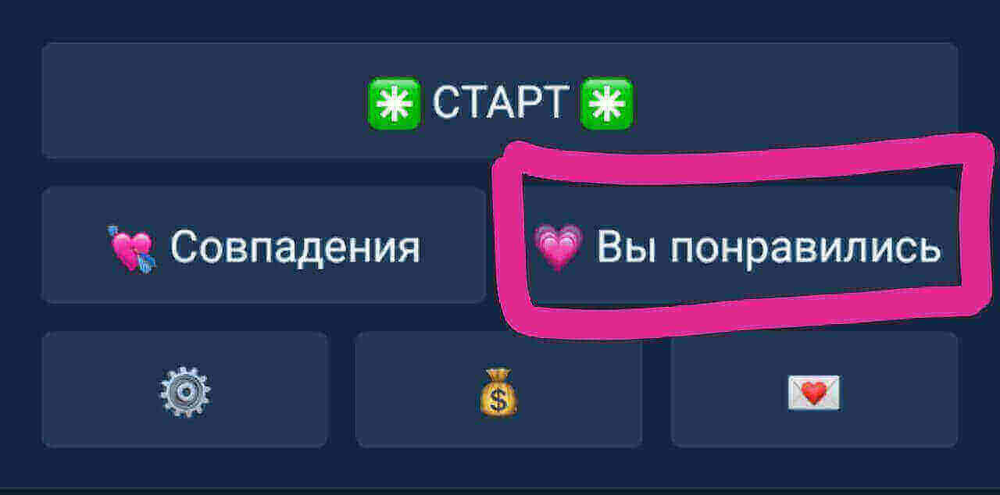

Si no encontró la respuesta a su pregunta aquÃ, puede contactarse con el soporte técnico en @Flirtu_support.
Por favor, indique su pregunta de antemano y describa lo que le sucedió, cuál es el problema y qué es exactamente lo que no le queda claro; si es necesario, adjunte una captura de pantalla.
Reclamos que indiquen "todo está mal", "qué hacer", "no entiendo", "ayúdame, no me sale" y otros que no contengan una descripción clara del problema no serán consideradas.
Tampoco se considerarán los mensajes de voz y los mensajes enviados como chat anónimo.
@Flirtu_bot es un servicio de citas. Haga clic en ✳️INICIAR ✳️y vea los perfiles de quienes también están buscando pareja. Pon un 💚 en los que te gustan. Cuando recibas un 💚, ambos recibirán un mensaje 💠de simpatÃa mutua y 💌 un enlace a un chat donde podrán charlar directamente. Si no quieres esperar, puede usar servicios de pago para aumentar tu popularidad o simplificar el proceso de citas.
No se puede. Una vez que se ha establecido una calificación, no se puede cambiar ni cancelar. Entonces, en caso de duda, mejor ponga 💚. Siempre puedes dejar de chatear más adelante)))
Porque la afinidad debe ser MUTUA. No es suficiente que solo tú le pongas a alguien un 💚. Esta persona también tiene que calificarte con un 💚. No importa quién ponga el 💚 primero y quién segundo, lo principal es que AMBOS lo hagan. Solo entonces tendrás una coincidencia de afinidad, después de lo cual ambos recibirán un mensaje sobre 💞 una coincidencia de afinidades 💌 y un enlace al chat, donde pueden comunicarse directamente.
Los contactos de los usuarios son información personal, no podemos difundirla. Solo los propios usuarios pueden decidir con quién compartir sus contactos. El chat es una oportunidad para charlar y decidir si deseas continuar la comunicación y compartir tus contactos.
Las monedas son valores de la plataforma para comprar/abrir servicios de pago adicionales que pueden acelerar y facilitar el proceso de citas o aumentar tu popularidad:
- 🚀Prioridad es una función que promueve tu perfil a lugares de visualización prioritarios para todos los usuarios, y ellos lo ven fuera de su turno. Inmediatamente, notarás cómo ha aumentado tu popularidad y cómo ha aumentado el número de coincidencias)))
- 💗Le gusto, esta es la sección en la que se seleccionan los perfiles de SOLO aquellas personas a las que YA les gustaste. Si no deseas ver en el Inicio todos los perfiles que coinciden con tus condiciones de búsqueda, o no deseas esperar hasta que alguien que te gusta lo vea y ponga que le gusta en respuesta, en esta sección puedes elegir entre los que ya han puesto 💚 e inmediatamente obtener una coincidencia + 💌 chat para comunicarse.
- 🎁Un regalo es una forma de llamar la atención de la persona que te gusta y ofrecerle tu propuesta para una evaluación de inmediata, en el momento de enviar el regalo, y no en la pantalla general. Además, si tu solicitud fue rechazada inicialmente, el obsequio le dará a la persona que te gusta la oportunidad de cambiar de opinión.
- Aceleración del lÃmite de tiempo al mostrar perfiles para quienes no les gusta esperar
El botón "💗Me gustas" se encuentra en el menú principal, en la parte inferior derecha debajo del botón ✳️INICIAR ✳️
Debes ir a la sección 💰Monedas. Hay instrucciones detalladas sobre cómo se pueden usar y cómo comprarlas. Existen varios métodos de pago.
Actualmente no existe tal función. Quizás aparezca más adelante.
Nadie te obliga a pagar. Toda la funcionalidad básica necesaria para las citas está disponible de forma gratuita. Y utilizar o no servicios pagados , esto es únicamente tu deseo y decisión.
Haz clic en ✳️INICIAR ✳️. Ahà están perfiles recopilados de todos los usuarios que coinciden con tu configuración de búsqueda: a los que ya les has gustado y los que aún no te han visto.
Solo alguien que no te responda puede responder a esta pregunta. Al recibir un mensaje, el usuario recibe una notificación con sonido de un mensaje entrante, asà como una indicación de mensajes no leÃdos en los botones del menú principal. Es posible que no te respondan por muchas razones: tal vez esta persona esté ocupada ahora, no está constantemente en la plataforma o que ya haya conocido a otra persona.
Asegúrate de que tu perfil se vea atractivo e interesante: sube una muy buena selfie, brillante, bonita. Completa la sección "Acerca de mÃ", escribe un poco sobre el tipo de relación que buscas, sobre tus gustos e intereses. También puedes utilizar la función 🚀Prioridad para aumentar tu popularidad y mostrar tu perfil a otros usuarios sin esperar en la fila.
Porque esta foto u otros datos del perfil no cumplen con las reglas del servicio. Por ejemplo, una imagen u otro dato de mala calidad / no tiene cara / es de Internet / contiene direcciones o contactos / pertenece a una persona menor de 18 años o a un niño / contienen publicidad u ofertas comerciales, etc.
A partir de los 18 años.
Actualmente, los usuarios no pueden hacer esto por su cuenta. Para eliminar un perfil, debe comunicarse con el servicio de asistencia técnica en @Flirtu_support. En la solicitud, debe enviar un mensaje de la plataforma (o una captura de pantalla) con los datos del usuario, que la plataforma envÃa cuando ingresa a ⚙️Configuraciones ––> 👤Mi perfil. Además, por favor indique el motivo de la eliminación; es muy importante que sepamos esto para mejorar el servicio))
Haga clic aquÃ:
Si no encontró la respuesta a su pregunta aquÃ, puede contactar con el servicio de soporte técnico del servicio @Flirtu_support.
Por favor, indique su pregunta de antemano y describa lo que le sucedió, cuál es el problema y qué es exactamente lo que no le queda claro; si es necesario, adjunte una captura de pantalla.
Reclamos que indiquen "todo está mal", "qué hacer", "no entiendo", "ayúdame, no me sale" y otras que no contengan una descripción clara del problema no serán consideradas.
Tampoco se considerarán los mensajes de voz y los mensajes enviados como chat anónimo.